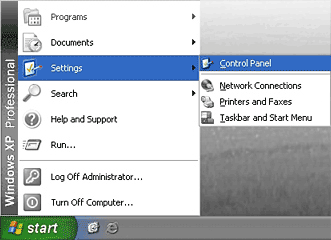
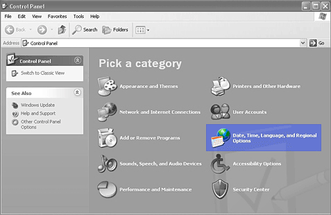
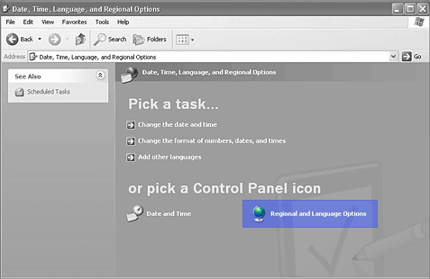
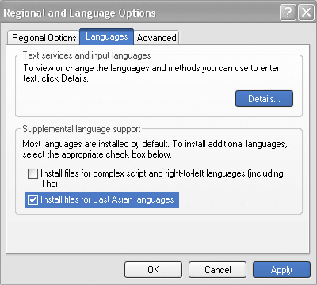
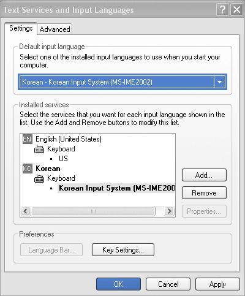
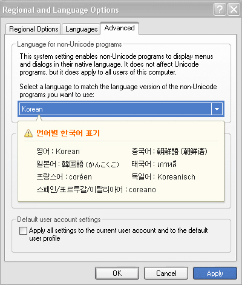
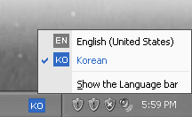

Windows 한국어 입력 설정
-
Windows 95/98/ME
Microsoft Global IME 5.02 for 32-bit Windows가 필요합니다.
아래 웹 사이트에서 "Microsoft Global IME 5.02 for Korean with Language Pack"을 선택하고
설명에 따라 프로그램을 다운로드 후 실행하십시오.
실행 후에는 컴퓨터를 다시 시작해야 합니다.
링크: http://www.microsoft.com/japan/windows/ie/downloads/ime5_win32/default.mspx -
Windows 2000
제어판(Control Panel)에서 국가 및 언어옵션(Regional and Language Options)을 선택하고
국가별 옵션 창이 뜨면 '한국어(Korean)' 설정을 합니다.
이 과정에서 Windows 2000 CD가 필요할 수도 있습니다. -
Windows XP
- 1) 시작 메뉴(start)에서 설정(settings) > 제어판(Control Panel)을 선택합니다. 
- 2) 제어판(Control Panel)에서 'Date, Time, Language and Regional Options'을 선택합니다. 
- 3) 국가 및 언어옵션(Language and Regional Options)을 선택합니다. 
-
4) 'Languages'탭을 선택하고 'Install files for East Asian languages'에 체크합니다.
해당 언어 파일 install 질문에 'Yes'를 선택하고, 'Apply' 버튼을 클릭합니다.
설치를 마치면 'Details' 버튼을 클릭합니다.  -
5) 'Default input language'영역의 화살표 선택영역에서 'English'를
'Korean-Korean Input System(MS-IME2002)으로 변경하여 선택하고, 'OK' 버튼을 클릭합니다.  -
6) 'Advanced'탭으로 이동되면, 선택 영역에서 'English'를 'Korean'으로 변경하여 선택하고,
'Apply' 버튼을 클릭합니다.  - 7) 한국어 설정이 완료되었습니다. 입력도구모음에 'Korean'이 추가된 것을 확인할 수 있습니다. 